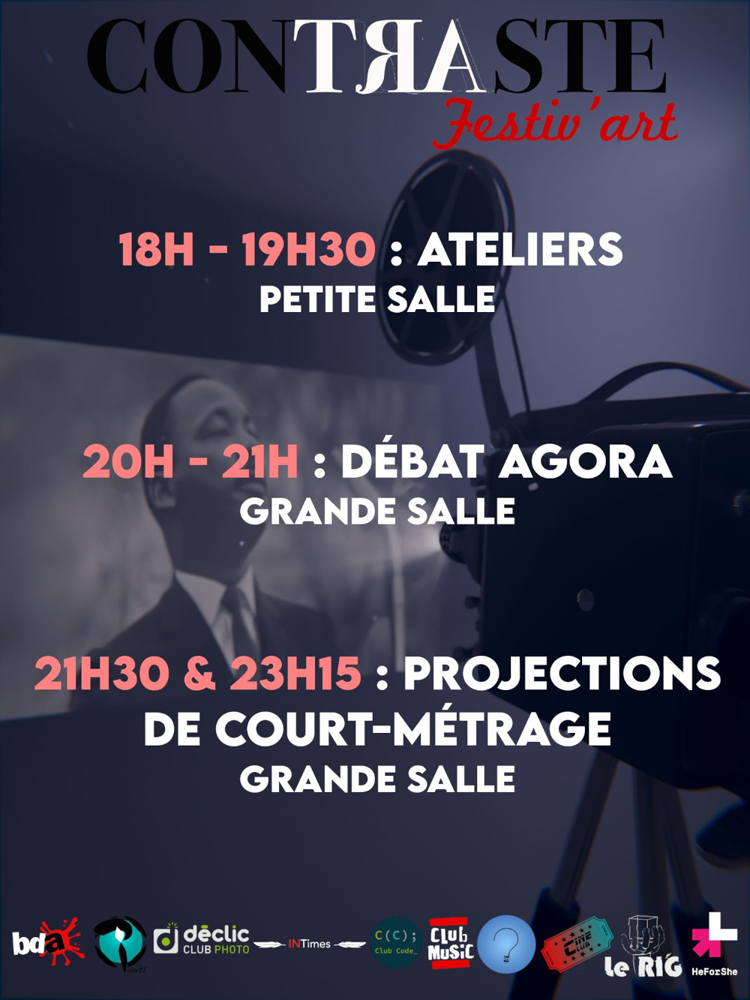
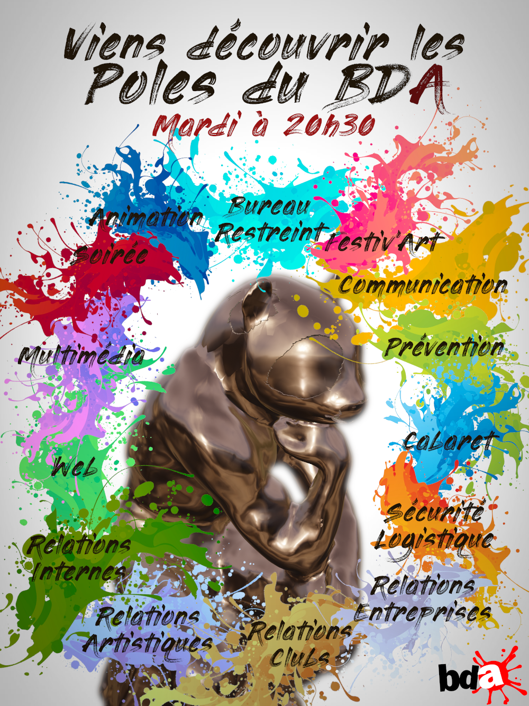
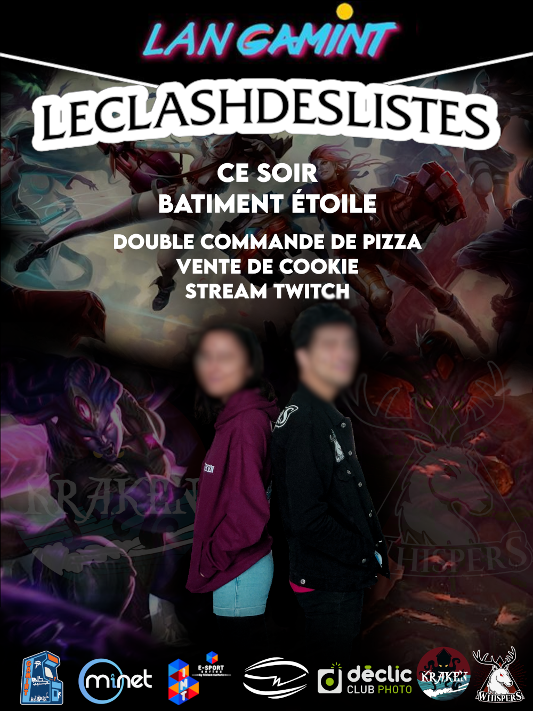
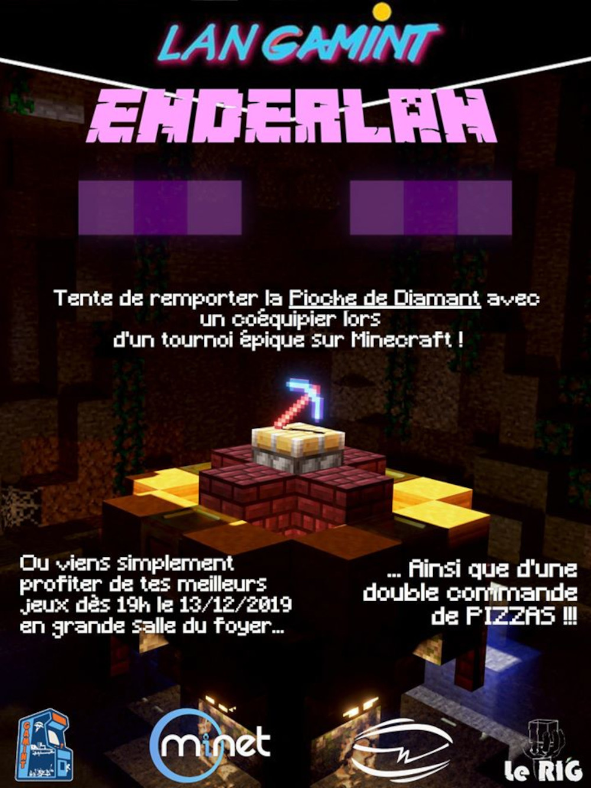
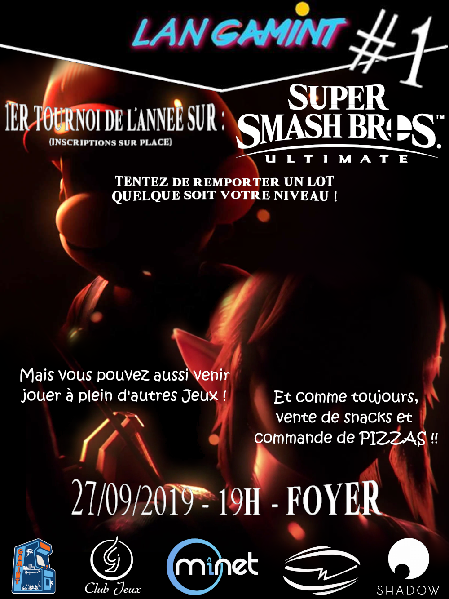
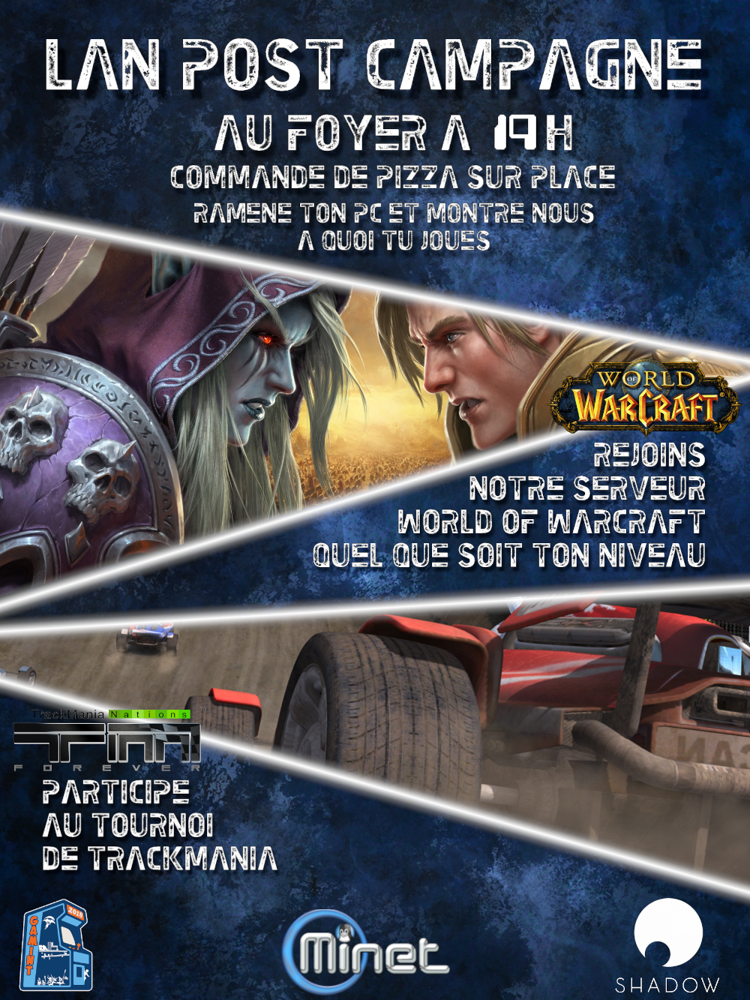
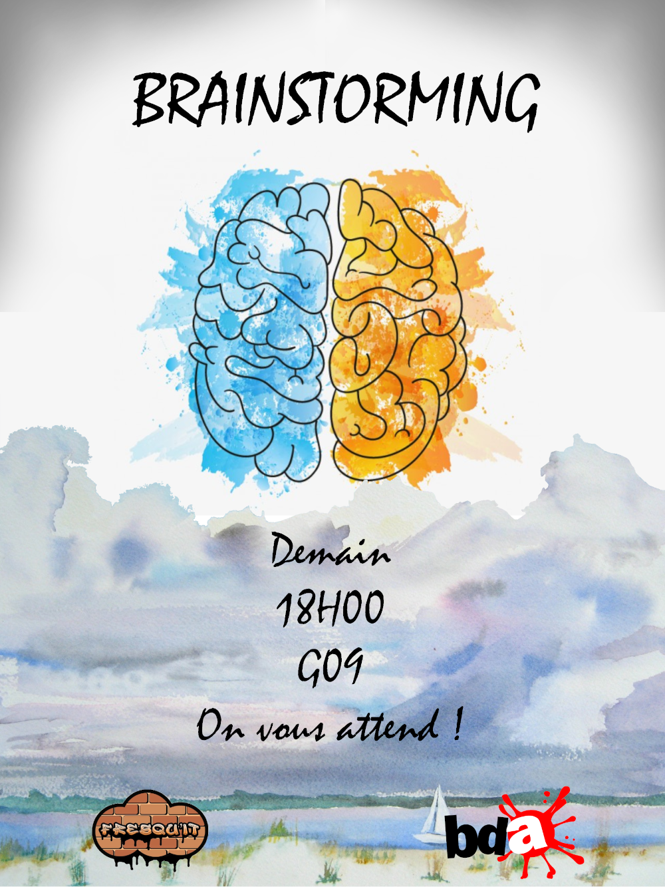
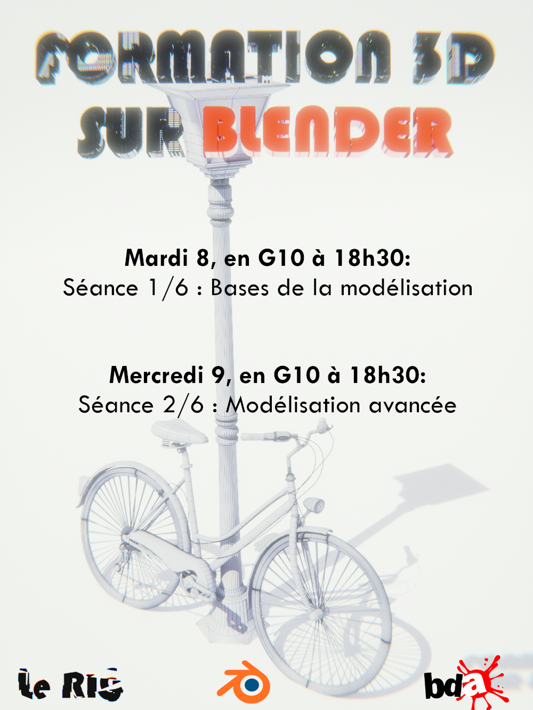
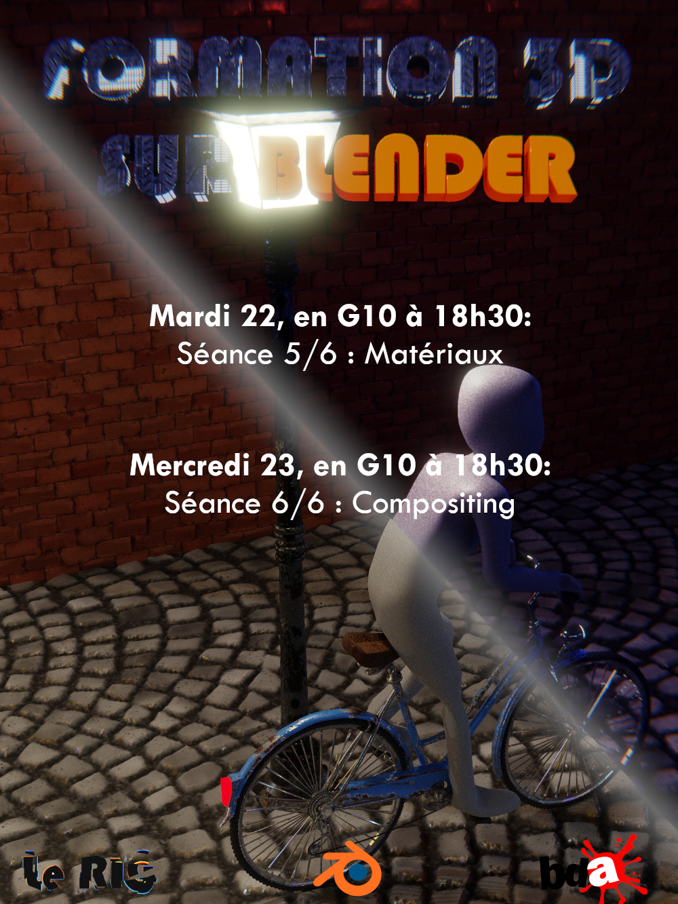

I løpet av de 3 årene jeg har vært i Telecom Sudparis, ble jeg med i flere klubber og foreninger hvor jeg ofte hadde en stilling knyttet til kommunikasjon.
På denne måten fikk jeg anledning til å lage flere illustrative plakater for disse klubbene, hovedsakelig ved å bruke programvaren Gimp.

BDA - Festiv'Art
Festiv'Art er et arrangement i regi av Telecom Sudparis sitt kunstkontor (BDA).
Den består av et sett med ulike aktiviteter og workshops fordelt over en uke.
Dette er plakaten jeg laget for å introdusere aktivitetene til den første dagen.

BDA - Presentasjon
For å sikre fornyelsen er det grunnleggende for kunstkontoret (BDA) å interessere og integrere nye studenter så tidlig som mulig i skoleåret.
Det er derfor det arrangeres en presentasjon av de forskjellige stillingene i Kunstkontoret, og dette er plakaten jeg laget for å annonsere den presentasjonen.
0

Gamint - Listers Kamp
Hvert år arrangerer Gamint et LAN på spillet «League of Legends», som er vårt mest populære LAN.
I denne anledning setter vi opp en turnering om dette spillet forbeholdt studentene som kandidater til Studentkontoret (BDE), og kaster den til de andre studentene.

Gamint - Den Enderlan
Plakat som annonserer den første utgaven av et LAN på Minecraft, som vi hadde forberedt en dedikert privat server for.
Jeg skjønte bakgrunnen til denne plakaten på Blender, så vel som modellen for den 3D-trykte trofeen som ble tilbudt LAN-vinnerne.
Trofeen viser frem en enderman (et ikonisk monster fra Minecraft) som holder en diamanthakke.
Gamint - Party Games LAN
Min første plakat som kommunikasjonssjef i Gamint.
Dette LAN-nettverket var rettet mot et sett med flere flerspillerspill som var raske å lære og hadde som mål å kunngjøre og feire det nye laget som leder klubben.

Gamint - Smash LAN
Plakaten for vårt første LAN som andreårsstudenter, jeg laget den med en førsteårsstudent.

Gamint - Min første LAN-plakat
Min første assosiative plakat noensinne, designet er inspirert fra en plakat fra det forrige Gamint-teamet.

GATE Prosjekt - Fresqu'It Brainstorming
Jeg har laget denne plakaten for å annonsere idédugnaden til GATE-prosjektet Fresqu'It.
Faktisk, siden prosjektet vårt handler om å male en vegg med hjelp av tenåringer fra Evry, tok denne idémyldringen sikte på å velge freske-temaet sammen med dem.
Mer informasjon om selve prosjektet er tilgjengelig nedenfor.

Le RIG - Formasjon 1 og 2 av 6
Da jeg opprettet 3D-klubben på skolen min, Le RIG, ga jeg treningsøkter på programvaren Blender for å lære de interesserte elevene grunnleggende om 3D-modellering og animasjon.
Denne plakaten annonserte de 2 første øktene som handlet om modelleringsdelen.

Le RIG - Formasjon 5 og 6 av 6
Og dette er plakaten for de to siste øktene.
De handlet om shaders, lyssetting og kompositering/post-prosess.
Jeg laget også en animert plakat til tredje og fjerde økt som handlet om rigging og animering.
GATE-prosjektet - Fresqu'It
GATE-prosjektet er et gruppeprosjekt som er obligatorisk for førsteårsstudenter ved Telecom Sudparis.
Fagene er ulike og ikke nødvendigvis knyttet til et teknisk emne. Jeg bestemte meg for å bli med i Fresqu'It-prosjektet.
Vi var 7 studenter som hadde som mål å lage et veggmaleri i en tunnel på Evry.
En særegenhet ved det prosjektet er at vi ikke ønsket å male denne fresken alene, men med deltakelse av barn og tenåringer som bor i Evry.
I løpet av dette prosjektet var en annen student og jeg ansvarlig for den eksterne kommunikasjonen, og her er oppsummeringsvideoen som vi har realisert og slutten av prosjektet.

 Français
Français English
English